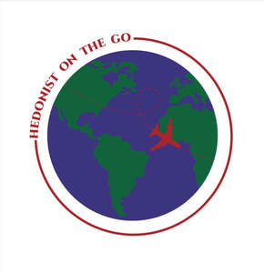

Trade Mark Journal No.2025/013 28 March 2025
UK00004171269 10 March 2025 (39,43)

- Class 39
- Travel consultancy; Travel agency services for business travel; Travel agency services for arranging travel; Consultancy for travel planning of routes; Travel agency services for arranging holiday travel; Travel agents services for arranging travel; Travel guide and travel information services; Organisation of travel; Travel organisation; Arranging of coach travel; Travel guide services; Guide services (Travel -); Organization of travel; Travel organization; Itinerary travel advice services; Booking agency services for airline travel; Booking agency services for travel; Organisation of travel tours; Travel agency services relating to travel by omnibus; Agency services for arranging travel; Organization of travel tours; Travel services; Travel consultancy and information services; Travel courier; Arranging of business travel; Travel booking agencies; Tour operator services for the booking of travel; Organising of travel; Services for the booking of travel; Travel courier services; Courier services (Travel -); Organizing of travel; Arranging for travel visas and travel documents for persons travelling abroad; Booking agency services relating to travel; Organization of travel and boat trips; Booking of travel through tourist offices; Reservation services for airline travel; Travel route planning; Ticketing services for travel; Travel arrangements; Arranging of travel by coach; Agents for arranging travel; Arranging of travel; Tourist travel reservation services; Travel agency services, namely arranging transportation for travelers; Arranging of transportation for travel tours; Organisation of holiday travel; Arranging of travel tours; Tours (Arranging of travel -); Arranging travel tours; Organising of foreign travel; Travel information; Planning, arranging and booking of travel; Reservation services for travel; Travel reservation services; Arranging for travel visas, passports and travel documents for persons traveling abroad; Travel arrangement; Arrangement of travel; Travel reservations; Travel and passenger transportation; Planning and booking of airline travel, via electronic means; Travel reservation; Reservation (Travel -); Booking of seats for coach travel; Ticket booking services for travel; Travel arrangement services; Booking of holiday travel and tours; Air travel services; Arranging of transport and travel; Travel and transport reservation services; Arranging and booking of travel; Travel information services; Holiday travel reservation services; Consultancy in the field of business travel provided by telephone call centers and hotlines; Arranging holiday travel; Seat reservation services for travel; Reservation services for air travel; Travel ticket reservation services; Ticket reservation services for travel; Ticket reservation services (Travel -); Cruise ship services [for travel]; Arrangement of travel to and from hotels; Services for the booking of seats for travel; Travel reservation and booking services; Travel arrangement and reservation services; Planning and booking of travel and transport, via electronic means; Providing tourist travel information; Agency services for arranging the transportation of travellers; Arranging of overseas travel for cultural purposes; Booking agency services for car hire; Booking agency services for sightseeing tours; Package holiday services for arranging travel; Arranging of air travel; Computerised reservation services for travel; Travel agency services, namely, making reservations and bookings for transportation; Travel and tour ticket reservation service; Provision of tourist travel information; Booking of tickets for travel; Booking of tickets for train travel; Reservation services for travel by air.
- Class 43
- Travel agency services for booking restaurants; Travel agency services for booking accommodation; Providing travel lodging information services and travel lodging booking agency services for travelers; Travel agency services for booking temporary accommodation; Travel agencies for arranging accommodation; Travel agency services for making hotel reservations; Travel agency services for reserving hotel accommodation.
Isil Caglayan